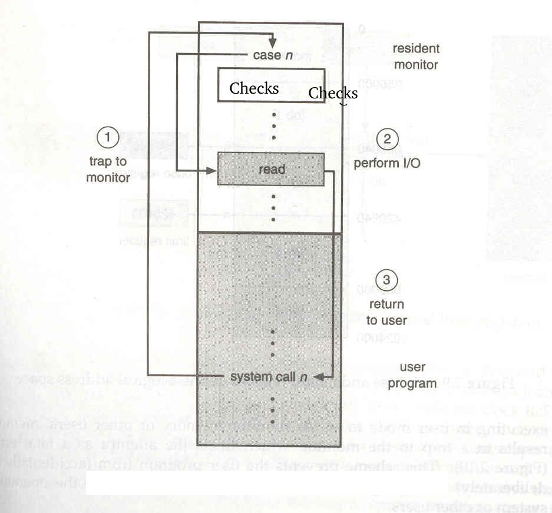

Basic Protection Mechanisms
Lecture-3
Operating Systems (CS330)
Lecturer: Deepak Gupta
Notes prepared by: Prashant Kumar
Lecture Date: Aug 2, 2004
Contents
Need for Protection Mechanisms
As computer systems have become more sophisticated and pervasive in
their applications, need to protect their integrity has also grown.
Modern protection concepts have evolved to increase the
reliability of any complex system that shares resources.
This is true for operating system too.
To improve system utilisation the Operating System shares
system resources among several programs simultaneously and
multiprogramming puts several programs in memory at the same time.
The programs in an operating system must be protected from
one another's activities .
For that purpose various mechanisms can be used to ensure that
files,memory segments,CPU and other resources can be operated
by only the programs which have gained proper authorisation
from the operating system.
This pursuit of improved utilisation of system resources
has led to following problems :
- One erroneous program might modify the
program or data of another program or the
operating system itself.
- Shared resources might be over-used by a
program intentionally or unintentionally.
- We need to prevent intentional or unintentional
violation of an access restriction by users.
- Many programs might be affected by a bug
in one program.
- If a program gets stuck in infinite loop
it will fail to relinquish CPU.
Back to Contents
Hardware Support
Many programming errors are detected by the hardware .
These are normally handled by the Operating System. If a program
fails in some way such as by making an attempt to execute an
illegal instruction or accessing memory that is not in its
address space, the CPU raises an exception.
This transfers
control to the Operating System which then handles
the exception using an appropriate routine and may
terminate that process. To ensure proper functioning, we must
protect these Interrupt Service Routines and all other programs and their
data from any malfunctioning or malicious program.
The approach taken by many Operating Systems is to make use
of a hardware support that allows CPU to differentiate between
various modes of operations. We'll read about it in a short while.
In this lecture we will talk about four protection mechanisms which are
used by operating system :
- Separate modes of CPU
Operation.
- I/O Protection.
- Virtual Memory.
- CPU Protection.
Separate Modes of CPU Operation
-
There are at least two modes of operation of system : Monitor mode and User mode.
Monitor mode is also called kernel mode,supervisor mode,system mode
or privileged mode.
User mode is also called unprivileged mode.
-
A bit1 called mode bit is added to hardware of computer,
whose value indicates the current mode. It enables the CPU to distinguish between a task executed on behalf of operating system or on behalf
of user.
Some instructions which can cause harm are designated as privileged instructions. Privileged
instructions can be executed only in monitor mode.
Any attempt to run them in
user mode is refused by hardware and treating it illegal hardware traps it to operating system.
-
At system boot time hardware starts in monitor mode.
The Operating System is then loaded and starts user processes in user mode.
On an interrupt, exception or trap hardware switches from user mode to monitor mode and
Operating System gains the control of the system.
-
The Operating System executing in monitor mode is given unrestricted access to both monitor
and user's memory space.
-
A user program can never gain the control of system in Monitor mode.
If it could all the protection mechanisms could be compromised.
Though a user program can cause
the system to go in Monitor mode by causing a Trap as and when it likes but as soon as system goes in monitor mode , control passes to Operating System and Operating System's code is executed.
Before returning the control to user mode Operating System
changes the mode bit to indicate user mode.
Since user processes run
in less privileged mode, they can't accidentally or maliciously corrupt another process
or the Operating System.Thus damage from program errors is localised and usually does not affect
other activity or program in the system.
- This dual mode of operation also gives rise to the concept of system call whereby user program interacts with kernel by
asking the system to perform some designated task that only operating system can do.
What is allowed in which mode?
Supervisor mode: Everything allowed.
User Mode:
Allowed: Typical ones are BRANCH,ADD, LOAD, STORE etc
NOT Allowed: IN,OUT (Raw I/O),
EI,DI (Interrupt enable and disable) etc.
How does the transition between modes occur?
User mode ---- > Supervisor mode
On interrupt,exception or trap.
In each case when the kernel receives control it
consults a dispatch table which contains the
address of routines that handle these events.
Supervisor mode ----> User mode
IRET (On return from exception handler)
Back to Contents
I/O Protection
A user program may disrupt the normal operation of the system by issuing I/O
calls in malicious ways or by accessing memory address within the operating system.
Moreover main memory accommodates both the operating system and the various user
programs. Therefor we must:
- Protect the Operating System from user processes.
- Protect the user processes from each other.
- Prevent Interrupt Vector from being modified
by user program.
- Prevent Interrupt Service routines from being
modified by user program.
To prevent users from performing illegal I/O all I/O instructions are defined
to be privileged. Thus users can't issue I/O instructions directly, they must do
it through Operating System. To do I/O a user program executes a system call
to request that the Operating System perform I/O on its behalf.

Use of System call to perform I/O
The Operating System operating in monitor mode checks that request valid and is in that program's address address space,if so it performs the requested I/O and then after changing
mode bit to user mode,passes the control to user program. If I/O request was
illegal then it generates exception.
Back to Contents
Virtual Memory
- Virtual memory is the separation of the of logical memory from physical
memory.
Addresses generated by a program are generally referred to as logical address
or virtual address.The set of all valid virtual addresses generated by a program is
its virtual address space where as the set of all physical addresses corresponding
to these virtual addresses is the physical address space of the program.
- The concept of separate logical and physical
address space is central to proper memory management in modern Operating Systems.
This runtime mapping from virtual to physical address is done by a hardware
device called Memory Management Unit using a set of address translation
maps.
Virtual memory scheme is generally implemented by paging or segmentation which we'll learn in later lectures.
- Memory Management Unit of computer has
a set of registers that identifies the translation map of the currently running
process. When the current process yields CPU to some other process the kernel
loads these registers with pointers to the translation map of the new process.
Memory Management registers can be accessed only in the monitor mode.
-
The program never sees nor needs to see the real
physical addresses. Program can create a pointer to memory location say 3695,
store it in memory , manipulate it , compare it to other addresses all as the
number 3695. It is mapped to physical addresses only for instructions like
LOAD and STORE.
CPU compares every address generated for its validity.
Any attempt by a program executing in
user mode to access Operating System's memory space or
other program's memory space results in a trap to Operating System.
-
User address space is usually divided into several components - the program
text(executable code), data, user stack, shared memory regions etc.
Back to Contents
CPU Protection
A user program may disrupt normal operation of the system by refusing to relinquish the CPU.
Thus in addition to protecting I/O and memory , we must ensure that Operating System
maintains the control. To accomplish this task a timer is used. A timer can be set to
interrupt the CPU after a specific period. Before turning over control to the
user program, the Operating System ensures that the timer is set to interrupt. If
the timer interrupts, control transfers automatically to the Operating System
which then decides whether the process should be given more CPU time or some
other process should be given the CPU.
Instructions that modify that the operation of the timer are privileged.
As a result of CPU scheduling we can improve both utilisation of CPU as well
as the speed of computer's response to the user.
Back to Contents
1
If modes of execution provided is more than 2 than then more than one bit is needed. For example Intel 80x86 provides four rings of execution hence it needs two mode bits. As another aside Unix uses only two of these modes.